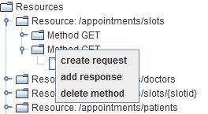
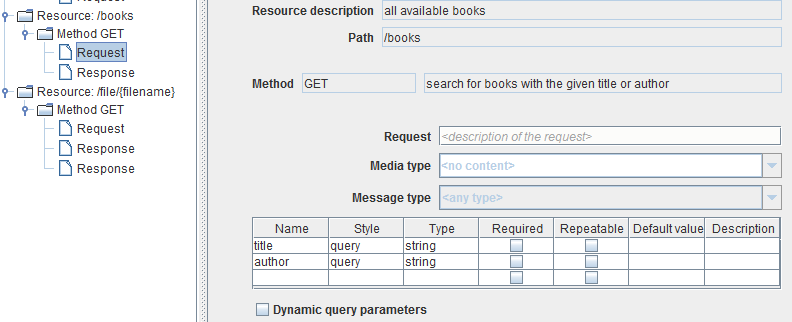
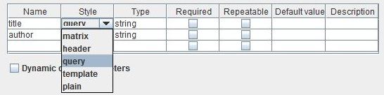

Request

Topic content
Configuration
For each method the user can define a corresponding .
1.Right click on the object and select the option in order to create a new request object.

2.Click on the created object to open the configuration panel for it.

There are five configuration fields related to the object.
•Request - The description of the request object.
•Media Type - defining the format of the request data (if any)
•Message Type - defining the internal Message Type to use for the Request data
•Method parameters - defining the request parameters. Headers, query parameters, etc.

Actually there are three styles which are reasonably usable here and . The styles matrix and plain are contained in the WADL standard but not yet implemented by Orchestra.
If a parameter is defined as required but not delivered by the client and no default value is defined, then orchestra returns a HTTP 400 (Bad Request) to the client.
If a parameter is defined as Repeatable then Orchestra will actually deliver a String containing a JSON array to the process model. Typically this is the case with SetCookie parameters. In this case e.g. a value like ["sid=SF2016062814060001","plan=DE"] might be delivered to the process model. Orchestra contains a set of Methods in its Customer-API (class soffico.customerapi.util.JsonHelper) to work with such values. Especially the methode parseJsonArray translates the String to a Java-List of Strings.
•If the check box Dynamic query parameters is set, then also query parameters whose names are not explicitly defined in the parameter list are delivered to the process model. In this case the REST service exposes a variable named DYNAMIC_QUERY_PARAMETERS of type emds.util.PropertyMap. This is a map of key value pairs which then can be handled by the process model.